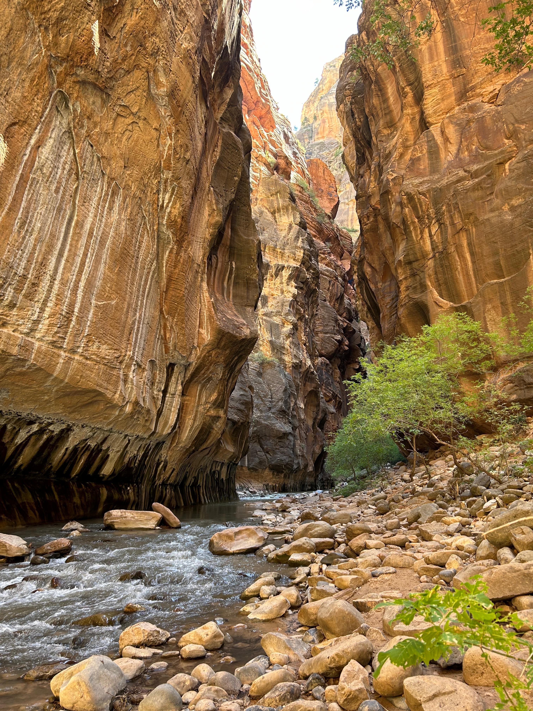

2024
Overview
Japan is definitely a beautiful country and a place worth visiting, especially during the cherry blossom season.
We went once between November and December and a second time between August and September (definitely warmer during those months).
Food is also amazing, especially if you have the freedom to roam around, enter any of the local very small and cute restaurants, and try whatever you like.
However, when it comes to gluten-free and vegetarian (or vegan), it is a (huge) bit more complicated, since most noodles are wheat-based, soy sauce is in almost everything, fish sauce, meat stock or gelatine, starch, and barley are all common ingredients.
A general workaround for finding gluten-free food is to stick with sushi, sashimi, and some unseasoned meat (barbecue for instance).
Another option for when in time of crisis, is to get onigiri with grilled salmon or spicy roe (plum option for vegetarians) from Lawson or 7-Eleven.
There, you can also find some gluten-free snacks, like rice crackers, some microwaveable rice, frozen vegetables, and ice cream from Haagen Dazs (stick to Macadamia Nuts, Green Tea, Strawberry, and Vanilla).
Finally, Japanese people are generally very helpful and will try to accommodate your dietary needs if you ask politely.
Since language is a barrier, it is a good idea to have a translation app with either microphone or Japanese keyboard.
We found extremely helful the FoodFit Japan app, which allows you to scan the ingredients list lable of any product and check if it is gluten-free, vegetarian, vegan, or else.
In combination with the Google Translate app with the camera feature, you will hardly have any surprises!
Los Angeles
Las Vegas

Zion National Park
Grand Canyon North Rim
We decided to visit the North Rim of the Grand Canyon because it is less crowded that the South Rim, and it was also closer to Zion National Park.
We recommend to book a cabin at the Grand Canyon Lodge, which is the only accommodation available in the North Rim.
We stayed in one of the inner / cheaper cabins, but the main part of the lodge, hosting a cozy living room and a restaurant,
is the perfect spot to enjoy the breathtaking views of the canyon at any time of the day.
Most of the viewpoints of the North Rim are accessible by car, but there are also some hiking trails that allow you to get closer to the canyon and enjoy the views from different perspectives.
Note: We are heartbroken to hear that the Grand Canyon Lodge burned down in the 2025 fire.
Where to Eat in Grand Canyon North Rim
Besides being totally shocked by the views, we were also surprised that we could even eat at the lodge.
Probably the best idea though is not to rely too much on the food there and bring some sandwiches or snacks with you.
- Deli in the Pines.
Despite being something between a diner and a supermarket, it offers a burger with the gluten-free bun and the Beyond Meat patty.
Alternatively, the beef brisket is a solid option. That was basically it!
Ratings: 4/5: not bad at all considering the location.
4/5: not bad at all considering the location.  3/5: only one option but very tasty.
3/5: only one option but very tasty.
- Grand Canyon Lodge.
We didn't try the restaurant at the lodge, but by talking to the personnel, it seems they had some gluten-free and vegetarian options.
I must say though, that by looking at the menu, the food seemed quite expensive and not that special.
Ratings:- 3/5: there are some options but it is very pricy.
- 2/5: there are some options but not too exciting.